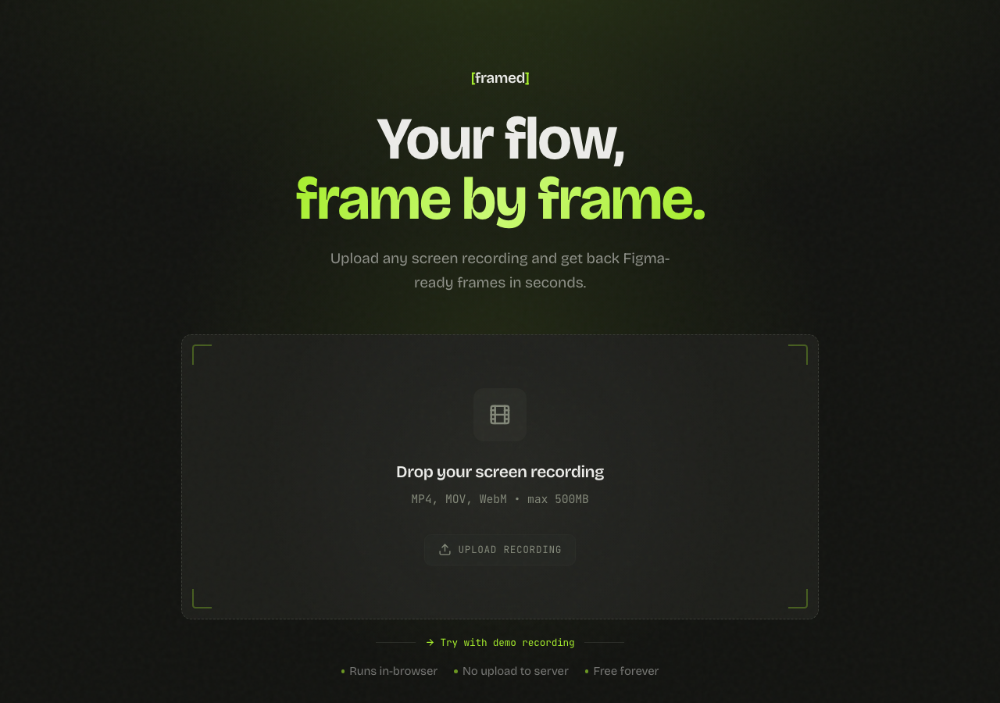

Screen recordings into Figma frames. Drop a video, extract the frames you need, export.
Screen recordings live in video files. Getting specific frames into Figma means a video editor, manual screenshotting, file juggling — and repeating the whole process every time something changes. Designers do this dozens of times a week.
Drop any screen recording. Scrub the timeline to the exact moments you need. The video stays in the browser — nothing uploaded to a server.
Select frames from the timeline. Each frame renders at the recording's native resolution using the Canvas API. Pixel-perfect, no compression artifacts.
Export frames as a ZIP of PNGs ready to drag into any Figma file. No plugin required on the Figma side.

Drop a recording and export frames in seconds